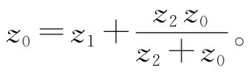
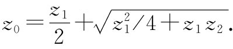
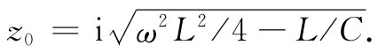
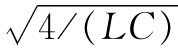

图22-18 梯形网络的有效阻抗
现在我们来考虑一个可用串联和并联组合加以分析的有趣电路。假定从图22-18（a）的那个电路开始。可以立刻看出，从端点a至端点b的阻抗仅是z1 +z2 。现在让我们考虑一个稍微困难一点的电路，如图22-18（b）所示。本来可以利用基尔霍夫法则来分析这个电路，但用串联和并联的组合也容易加以处理。可用一个单独阻抗z3 =z1 +z2 来代替右端的两个阻抗，如图22-18（c）所示。然后，z2 和z3 两阻抗又可以用它们的等效并联阻抗z4 来代替，如图22-18（d）所示。最后，z1 和z4 与一个单独阻抗z5 等效，如图22-18（e）所示。
图22-19 无限长梯形网络的有效阻抗
现在可以提出一个有趣的问题：要是我们在图22-18（b）的那个网络上永远 保持增多一些节段——如图22-19（a）中虚线所示——将会发生什么样的情况呢？我们能否解出这样一个无限长的网络？噢，那并不怎么困难。首先，我们注意到，如果在这一无限长网络的“前”端再添加一节，它仍不会改变。的确，若我们添加一节于一无限长网络，它仍然是同样的无限长网络。假设把在这个无限长网络两端点a和b之间的阻抗称为z0 ，则在c和d两端点右侧的所有东西的阻抗也将是z0 。因此，就其前端来说，可以将该网络表达成如图22-19（b）所示。构成z2 与z0 的并联组合，并将这个结果与z1 相串联，我们便能立即写下这个组合的阻抗：
但这一阻抗也等于z0 ，因而得到这么一个方程：

由此可以解出z0 ：
 （22.27）
因此，我们已求得含有反复串联和并联阻抗的无限长梯形网络的阻抗的解。阻抗z0 被称为这样一个无限长网络的特性阻抗 。
现在让我们来考虑一个特殊例子，其中串联元件是一自感L而并联元件是一电容C，如图22-20（a）所示。在这种情况下，通过令z1 =iωL和z2 =1/（iωC），我们便可求得该无限长网络的阻抗。注意式（22.27）中的第一项正好是那头一个元件阻抗的一半。因此，要是把该无限长网络画成像图22-20（b）所示的那样，似乎就更为自然，或至少较为简单。若从端点a′去观看该无限长网络，则会知道该特性阻抗为
图22-20 一个L-C梯形网络以两种等效方式画出
现在就有两种有趣的情况，都取决于频率。如果ω2 小于4/（LC），则根号内的第二项将比第一项小，因而阻抗z0 将是一实数，反之，若ω2 大于4/（LC），则阻抗z0 将是一个纯虚数，并可写成

我们以前就曾经说过，一个仅含有诸如电感和电容那种虚数阻抗的电路，将有一个纯虚数的阻抗。目前正在研究的电路——仅含有一些L和一些C——在频率低于 时其阻抗怎么能够是纯电阻呢？对于较高频率，阻抗为一纯虚数，这与我们以前的说法一致。对于较低频率，阻抗是一纯电阻，因而将吸收能量。该电路为什么会像电阻那样不断吸收能量，要是它仅由电感和电容所构成呢？答案 ：由于有无数个电感和电容，以致当源被连接到该电路上时，它会对第一个电感和电容供应能量，然后又供应那第二个、第三个，等等。在这种电路中，能量不断以一恒定速率被吸收，即从发电机那里稳恒地流出并进入该网络中去，所供应的这些能量被储存在下行线路中的那些电感和电容中去了。
这一概念暗示着在该电路中发生的情况有一个有趣的地方。我们预期，如果把一个源接到其前端，则这个源的效应将经由该网络向无限远的一端传播。波沿线向下的这种传播很像一根从它的驱动源吸收了能量的天线所发出的辐射。也就是说，我们期望，当阻抗是一实数、即ω比 小时，这样一种传播就会发生。但当阻抗是一纯虚数、亦即ω比 大时，就不该指望看到任何这种传播。